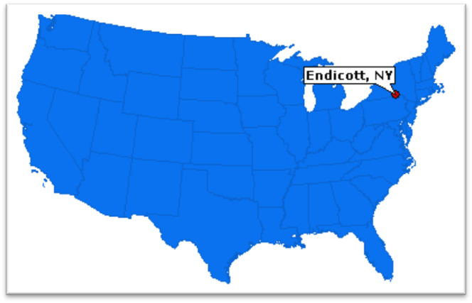

Endicott, New York

Endicott is a village in Broome, New York,
USA. The population was 13,392 at the 2010 census. It is part of the district.
Binghamton The village is named after Henry B. Endicott, founding member
Endicott Johnson Corporation shoe companies. Endicott Village
is located in the city of Union and is located west of the city of Binghamton. Community
is served by Greater Binghamton Airport. It is part of the "Triple
cities ”along with Binghamton and Johnson.